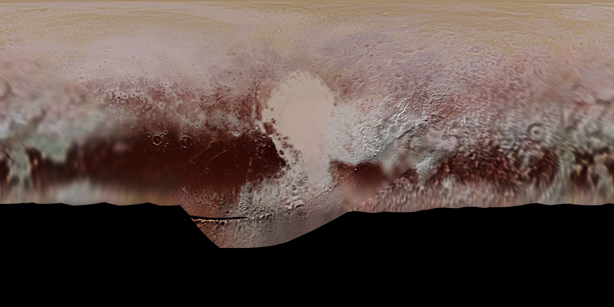
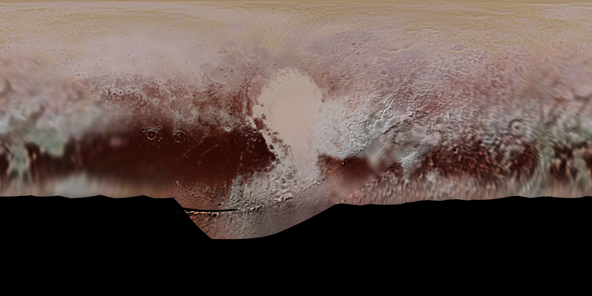

PLUTON


 

Pluton est la plus célèbre des planètes naines du système solaire, située dans la ceinture de Kuiper, au-delà de Neptune. Découverte en 1930 par Clyde Tombaugh, Pluton a d'abord été classée comme la neuvième planète du système solaire avant d'être reclassée comme une planète naine en 2006 par l'Union astronomique internationale. Sa taille, sa composition et ses caractéristiques géologiques en font un objet d'étude fascinant pour les astronomes et les planétologues.
| Diamètre moyen | 2 372 km |
|---|---|
| Periode de rotation
La période de rotation est la durée mise par un astre pour faire un tour sur lui-même. |
6,387 jours |
| Periode orbitale
La période de révolution, aussi appelée période orbitale, est la durée mise par un astre pour accomplir une révolution complète autour d’un autre astre |
247.74 années |
| Temperature minimal | -238°C |
| Temperature maximale | -170°C |
| Lunes | 5 |
| Population | 0 |
Caractéristiques générales
ChatGPT
1. Caractéristiques générales
Pluton est la plus célèbre des planètes naines et est située dans la ceinture de Kuiper, une région du système solaire au-delà de Neptune. Avec un diamètre d'environ 2 377 kilomètres, Pluton fait environ deux tiers de la taille de notre Lune. Sa masse est environ 0,2% de celle de la Terre, ce qui en fait une planète naine relativement petite.
Surface et composition
La surface de Pluton est composée principalement de glace de méthane, d'azote et de monoxyde de carbone. Pluton présente une variété de terrains, y compris des montagnes glacées, des plaines gelées et des cratères. Une des caractéristiques les plus notables est la région en forme de cœur appelée Tombaugh Regio, composée de glace de monoxyde de carbone et de méthane.
Atmosphère et climat
Pluton possède une atmosphère ténue principalement composée d'azote, avec des traces de méthane et de monoxyde de carbone. En raison de son éloignement du Soleil, les températures sur Pluton sont extrêmement basses, souvent tombant à environ -229 degrés Celsius. L'atmosphère de Pluton se dilate et se contracte considérablement au cours de son orbite elliptique autour du Soleil.
Géologie et hydrologie
Des preuves géologiques suggèrent que Mars a abrité de l'eau liquide à sa surface dans le passé, avec des vallées fluviales, des deltas et des minéraux hydratés. Aujourd'hui, l'eau existe principalement sous forme de glace dans les calottes polaires et possiblement sous la surface. La recherche de traces d'eau liquide actuelle est une priorité pour les missions martiennes.
Les lunes de Pluton
Pluton a cinq lunes connues: Charon, Nix, Hydra, Kerberos et Styx. Charon est la plus grande et la plus proche, avec un diamètre d'environ 1 212 kilomètres, soit un peu plus de la moitié de celui de Pluton. Le système Pluton-Charon est parfois considéré comme un système binaire en raison de la taille relativement grande de Charon par rapport à Pluton.
Exploration et observation
Pluton a été explorée pour la première fois par la mission New Horizons de la NASA, qui a survolé la planète naine en juillet 2015. New Horizons a fourni des images et des données détaillées sur la surface, l'atmosphère et les lunes de Pluton, transformant notre compréhension de cette mystérieuse planète naine. Avant cette mission, Pluton n'avait été observée que par des télescopes terrestres et spatiaux, avec des images relativement floues et peu détaillées.